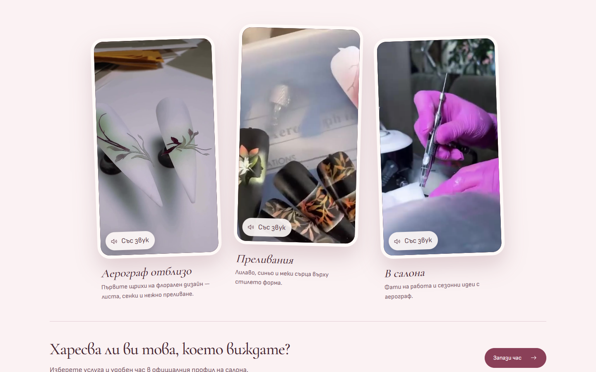
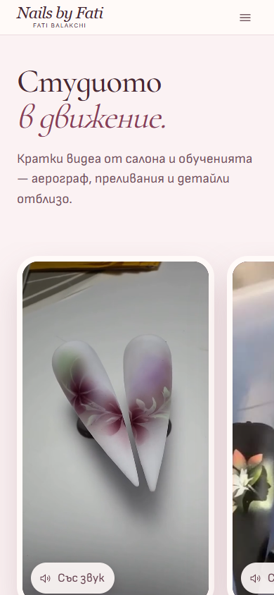
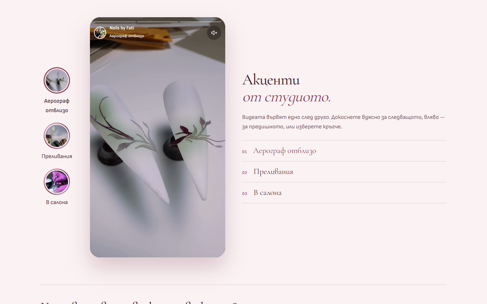
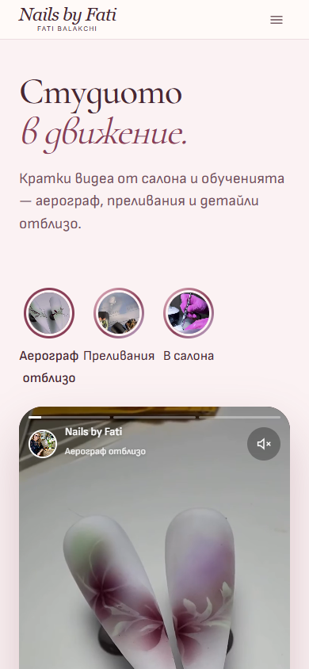
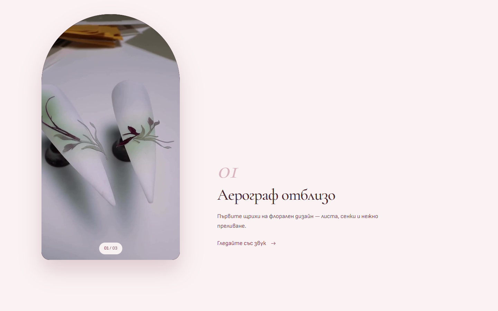
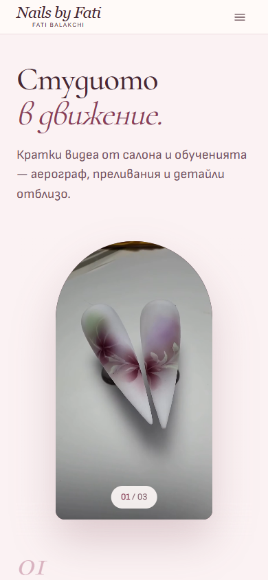
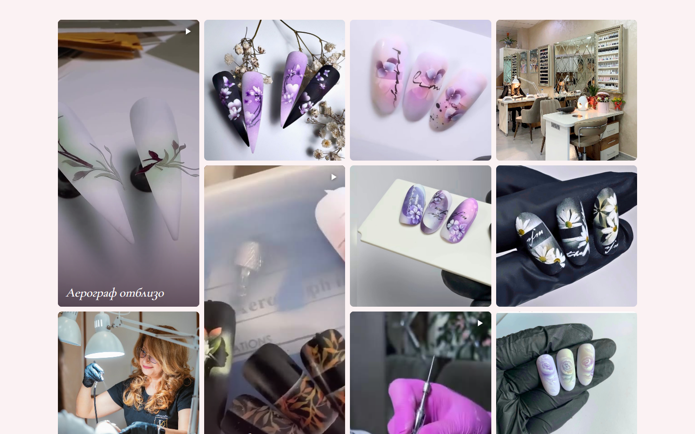
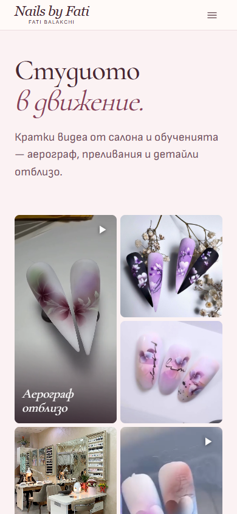

All the reels play at once, side by side, slightly fanned like phones on a table. Tap one to watch it with sound.
More videos: 4–5 fit in a row on desktop; with more, the row scrolls sideways (it already does on phones).


One phone-sized player that runs through the reels like Instagram Stories, with progress bars, tap left/right, a sound button and highlight circles.
More videos: Each new video adds a bar and a highlight circle. Works with any number.


The video stays pinned inside an arch while short chapters scroll past. Each chapter switches to its own clip.
More videos: Each new video becomes another chapter with its own text.


An Instagram-profile-style grid: reels as tall tiles between square photos of her work. Everything opens in a popup.
More videos: The wall just gets longer; mixing in photos means it never looks empty.